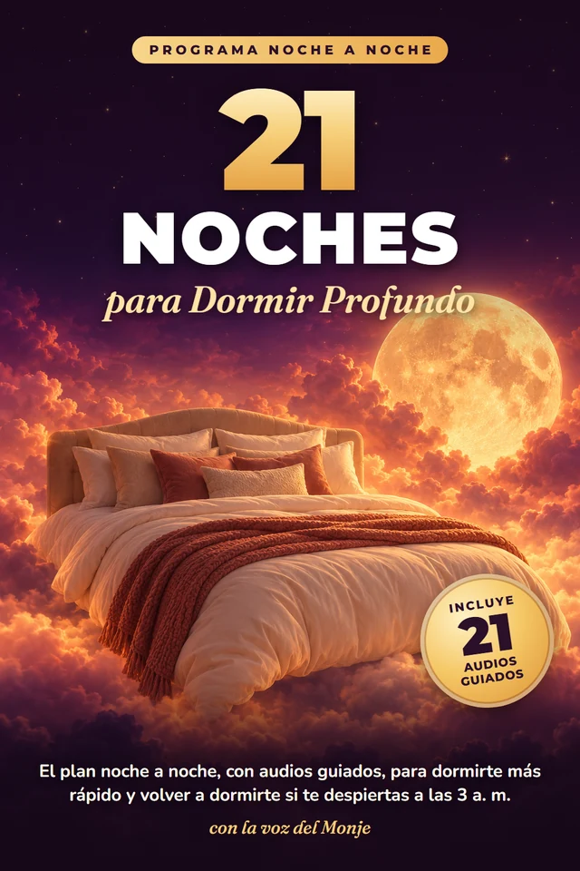
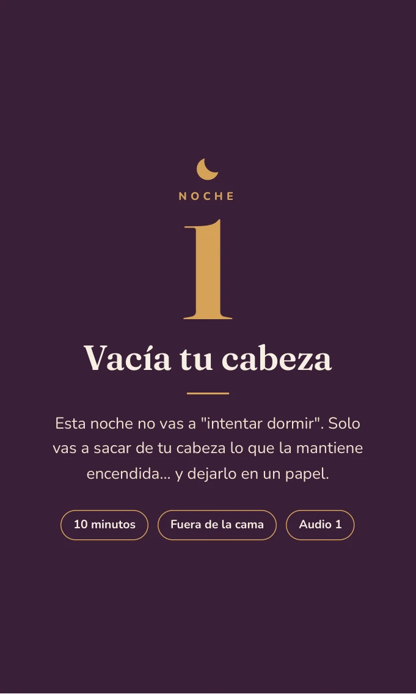
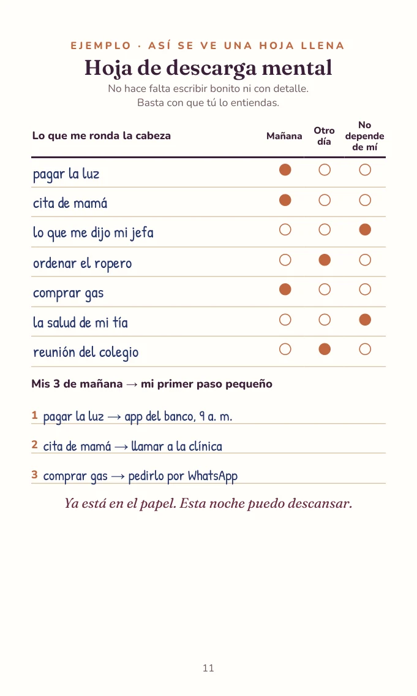
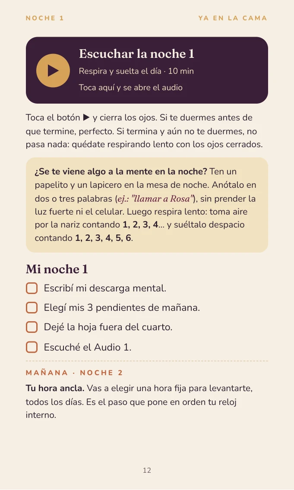

El libro de 182 páginas
PDF con las 21 noches, pasos claros y ejemplos. Lo abres desde tu celular.
UN PASO CADA NOCHE
¿Te despiertas a las 3 a. m.?
Un plan con audios para dormirte con menos vueltas y saber qué hacer si despiertas de madrugada.

PDF + 21 audios guiadosPago único · Acceso inmediato · Garantía de 7 días
Primero, escucha la voz del MonjeCUANDO APAGAS LA LUZ…
Quizá te suena alguna de estas frases.
UN CAMINO PARA SEGUIR
Los consejos sueltos pueden ayudar. Lo difícil es elegir uno y repetirlo. Aquí tienes un orden, un paso concreto y un audio que te acompaña.
Una noche a la vez. Vas directo a la acción, sin leer todo el libro de golpe.
Tienes ejemplos y hojas simples. Si no puedes imprimir, usa cualquier papel.
Toca el botón del audio en el PDF. La voz serena del Monje te guía, con pausas largas.
No necesitas una noche perfecta. Si una noche no puedes, retomas la siguiente.
ESCUCHA ANTES DE ELEGIR
Escucha los primeros 50 segundos de la noche 1. Así conocerás el tono sereno y las pausas que acompañan cada audio.
MUESTRA · NOCHE 1
Toca ▶ para escuchar. Los audios completos duran unos 9–10 minutos. Sin apuro, con espacio para respirar.
Descargar la muestra de 50 segundosTODO EN UN MISMO PROGRAMA
Una guía para preparar el descanso, escuchar y tener un plan a mano cuando lo necesites.
PDF con las 21 noches, pasos claros y ejemplos. Lo abres desde tu celular.
La voz del Monje, con ritmo lento y pausas largas. Cada noche tiene su botón de audio dentro del PDF.
Registro de sueño, descarga mental, plan de luz y más. Con ejemplo lleno y versión para hacer a mano.
Un plan para cuando despiertas de noche. También incluye un apartado para los calores nocturnos.
Estas son páginas reales del PDF. Toca una imagen para verla en grande.



TRES SEMANAS, UNA NOCHE A LA VEZ
No tienes que cambiar todo hoy. El programa te lleva paso a paso.
SEMANA 1 · NOCHES 1–7
Guardas los pendientes, ordenas tus horarios y preparas tu ritual.
SEMANA 2 · NOCHES 8–14
Practicas el control de estímulos y la relajación muscular. Aprendes a soltar la espera.
SEMANA 3 · NOCHES 15–21
Preparas tu plan de madrugada, revisas el cuarto y eliges lo que te sirve.
PRÁCTICAS CON UNA BASE REAL
El libro adapta prácticas de la terapia cognitivo-conductual para el insomnio y de la higiene del sueño. Incluye descarga mental, hora de la preocupación, control de estímulos, relajación muscular y respiración lenta.
Es una guía educativa. El respaldo corresponde a las técnicas; no es una prueba de resultados de este ebook ni equivale a recibir terapia.
ELIGE CON CALMA
Este programa no trata esas causas. Un profesional puede ayudarte a elegir el cuidado adecuado.
TU PROGRAMA COMPLETO
El libro, los audios y las hojas prácticas. Todo listo para que sigas el camino a tu ritmo.
UN SOLO PAGO
12 USD
Sin suscripción · Acceso inmediato
Quiero el programa · 12 USDCompra a través de Hotmart
Si no te sirve, pides tu reembolso dentro de 7 días desde Hotmart.
ANTES DE EMPEZAR
Lo necesario para dar el primer paso con tranquilidad.
Después de que Hotmart confirme tu pago, tienes acceso inmediato al producto digital. Sigue las instrucciones de acceso de Hotmart para abrir o descargar el PDF. Los botones dentro del libro abren los audios.
Sí. El PDF está pensado para leerse en el celular. Abre la noche que te toca y pulsa su botón de audio. Necesitas conexión a internet para abrir los audios.
No. Cada hoja tiene un ejemplo lleno y una opción para hacerla a mano. Puedes usar un cuaderno o cualquier papel.
Cada audio dura unos 9–10 minutos. Antes haces el paso de esa noche: suele llevar unos pocos minutos y el libro te dice cuánto. Algunas prácticas, como la hora de la preocupación o el ritual, se hacen en otro momento del día.
No dejes ninguna medicación ni cambies la dosis sin consultar a tu médico. Pregúntale cómo integrar estas prácticas a tu cuidado actual.
Sí. Es para personas adultas de cualquier género. El apartado de calores nocturnos se usa si te pasa; no tienes que hacer todo de la misma manera.
No. Son 12 USD en un solo pago por el programa. No hay pagos mensuales.
Tienes 7 días de garantía. Dentro de ese plazo, puedes pedir el reembolso desde Hotmart.
UNA NOCHE A LA VEZ
No tienes que resolverlo todo antes de dormir.
Empieza con un paso pequeño.
Pago único · Garantía de 7 días